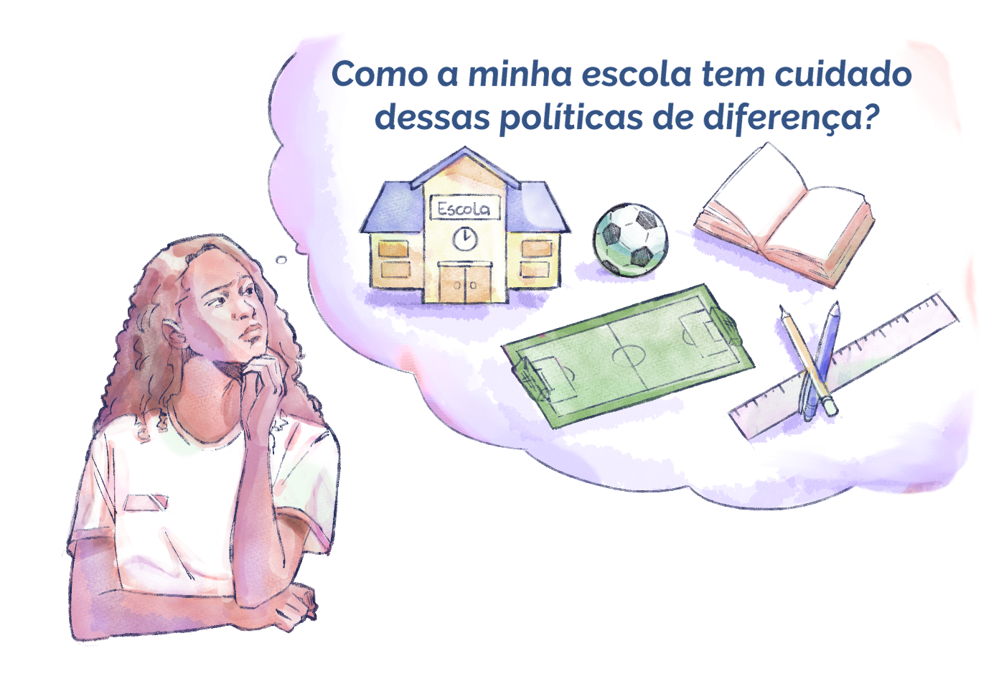

Políticas das diferenças
As políticas públicas educacionais voltadas aos sujeitos da diversidade criadas até aqui revelam trajetórias de lutas, conquistas e desafios. Mas é evidente que muitas delas precisam ser atualizadas e/ou adaptadas às realidades locais e aos contextos político-sociais que vamos construindo enquanto sociedade. E, certamente, outras políticas educacionais ainda precisarão ser elaboradas para garantir os direitos da população mais vulnerável.
Entretanto, hoje já temos um conjunto de ações e leis que se dirigem à efetivação de direitos e que implicam diretamente no cotidiano escolar. Assim, cada gestor precisa reconhecer-se como partícipe da efetivação dessas políticas públicas educacionais, que podemos definir como políticas das diferenças, porque imprimem um olhar específico e cuidadoso às demandas de grupos distintos.
Na condição de partícipe, é fundamental questionarmos: como nossa escola tem cuidado dessas políticas da diferença? Que efeito temos provocado na formação social, pedagógica e política da juventude que adentra à escola em busca de uma formação que possibilite transformar sua realidade? Como a formação profissional que ofertamos tem influenciado as condições e expressões de discriminação que também se efetivam no mundo do trabalho?

Título: As políticas da diferença no contexto escolar
Fonte: Prosa (2025a).
Essa lógica de ser partícipe nasce da constatação de que não basta defendermos o direito à igualdade sem compreender quem são as pessoas que têm sua dignidade atacada e por quais razões isso acontece. Ou seja, faz-se necessário compreender quais são os marcadores de diferença usados para produção de discriminação e exclusão. Isso significa que é preciso singularizar e especificar sobre quais aspectos os direitos são violados para darmos respostas adequadas e que garantam efetivamente a reparação das violências sofridas. A essa reparação chamamos Ações Afirmativas. Segundo a professora e jurista Flávia Piovesan (2005, p. 49),
Elas constituem medidas especiais e temporárias que, buscando remediar um passado discriminatório, objetivam acelerar o processo com o alcance da igualdade substantiva por parte de grupos vulneráveis, como as minorias étnicas e raciais e as mulheres, entre outros grupos.
Nesse sentido, as Ações Afirmativas visam garantir que, além de buscarmos estancar as ações de discriminação e até exigir punição diante delas, sejam realizadas ações de compensação que acelerem a igualdade de direitos e promovam a inserção e a inclusão de grupos socialmente vulneráveis nos espaços sociais.
As Ações Afirmativas também são conhecidas como ações de discriminação positiva, pois elas são construídas a partir das particularidades de cada grupo. Assim, os critérios que historicamente levaram mulheres, pessoas negras, quilombolas, indígenas, pessoas com deficiência e da comunidade LGBTQIA+ a serem excluídos de espaços como universidades, a serem privados de empregos públicos, a terem salários menores, entre outras desigualdades promovidas, devem agora ser os mesmos critérios utilizados para restituir os direitos historicamente negados. Um exemplo disso são as cotas sociais e raciais para ingresso nas instituições de Ensino Superior. Se no nosso país há uma restrição geral de números de vagas no Ensino Superior em relação à alta demanda de jovens que saem do Ensino Médio, e se os exames de classificação (como o Exame Nacional do Ensino Médio – ENEM – e os vestibulares) privilegiam conteúdos e tempos de aprendizagem que apenas uma camada social tem acesso, é justo que haja gradações para concorrência das vagas disponíveis nas instituições de Ensino Superior no Brasil. Desse modo, as cotas são uma tentativa de diminuir o fosso ao acesso à educação.
Dados do Instituto Brasileiro de Geografia e Estatística (IBGE, 2022) apontam que 55,5% da população brasileira é negra (pretos e pardos). Apesar disso, estudos do Instituto Nacional de Estudos e Pesquisas Educacionais (INEP) mostram que, em 2022, apenas 20,2% desta parcela populacional teve acesso ao Ensino Superior, sendo jovens entre 18 e 24 anos. Por isso, como afirma Bárbara Pinheiro (2023), a cota é um importante mecanismo de equidade social, pois ela possibilita dirimir as vantagens de quem apenas pode se preocupar em estudar e tem o estudo como sua principal atividade. Trata-se de uma reparação histórica, não de cada sujeito em si, mas de sua coletividade.

Título: As cotas nas universidades estaduais e federais entre os anos de 2013 e 2022
Fonte: Freitas; Nascimento (2022).
Elaboração: Prosa (2025b).
Diante do fato de ainda percebermos que as universidades são territórios povoados por pessoas brancas, Amélia Artes e Danielle Oliveira, em seu estudo intitulado “O que mudou para a população negra no acesso à educação brasileira? Quais os (novos) desafios?” (2019), afirmam que
Se, no intervalo entre 1991 e 2000, as distâncias entre os grupos mantiveram-se estáveis, as mudanças são observadas no intervalo entre os anos de 2000 e 2010. Vale ressaltar que foi nessa década que as políticas de ação afirmativa adentraram as Instituições de Ensino Superior, garantindo mais equidade e maior acesso para pretos, pardos e indígenas nos cursos de graduação
Posto isso, é importante destacar que as Ações Afirmativas são efetivamente a porta de entrada e de permanência dos sujeitos de direitos na escola. Mas de que maneira estamos tratando disso na EPT? Fazer a comunidade escolar enxergar as Ações Afirmativas como uma política de direito pode viabilizar a consolidação de uma educação democrática presente no cotidiano, sobretudo por poder trazer sujeitos da diversidade para um processo formativo pautado na educação integrada.
Muitas vezes, docentes, pais, responsáveis e demais estudantes exprimem resistência à presença de alunos cotistas na instituição, seja pelas cotas raciais, sociais, quilombolas ou de pessoas com deficiência. O argumento comumente utilizado é o de que tais alunos não possuem condições de acompanhar o desempenho dos demais e “atrapalham” a qualidade do ensino. Cabe à gestão construir um projeto de formação social e política junto à comunidade escolar que se coloque em favor da defesa de direitos conquistados tão arduamente.
O que você acha da possibilidade de criar grupos de estudantes cotistas para o fortalecimento socioemocional deles no ambiente escolar? Ou de mobilizar docentes a criar um trabalho de extensão para divulgar a política de cotas, bem como criar cursinhos de revisão de conteúdos para fortalecer o processo de aprendizagem de estudantes em processos seletivos por Ação Afirmativa?
Acesse o trabalho “Estratégias e táticas de permanência no ensino superior: narrativas sobre experiências de estudantes negros cotistas na Universidade Estadual de Santa Cruz (2012- 2017)” para saber mais sobre pesquisas que debatem as políticas de Ações Afirmativas e histórias de estudantes cotistas.
Cabe relembrar, como vimos no capítulo 2, que a interiorização e a ampliação das vagas, tanto na Rede Federal de Educação Profissional e Tecnológica quanto nas redes estaduais, é um processo de democratização de uma formação que os trabalhadores fervorosamente defenderam e continuam a defender. Mas o acesso à EPT precisa ser conquistado diariamente, principalmente nos momentos nos quais os processos seletivos são abertos.
O papel dos gestores é ampliar essas conquistas a partir da garantia e da valorização plena do acesso dos sujeitos da diversidade à educação, sobretudo à uma educação que centra seu propósito na realidade do trabalho e na transformação da sociedade.
Para refletir: Ações Afirmativas na EPT
Chegamos ao primeiro momento reflexivo deste capítulo!
Você já observou como as vagas de cotas são divulgadas e efetuadas na sua escola? Quais ações são implementadas para divulgar e facilitar inscrições e acesso a essa política? As vagas são tratadas como direito dessa população ou como uma benesse? E caso elas ainda não existam, que esforços são realizados para atrair e incluir estudantes advindos de escolas públicas ou com deficiência, ou de comunidades indígenas, periféricas ou quilombolas?
Relate como você observa essa questão na sua realidade e quais atitudes podem ser efetivadas para fortalecer as Ações Afirmativas enquanto política de reparação de direitos.
Lembre-se de registrar suas impressões no seu Memorial e/ou seguir as orientações de seu tutor.